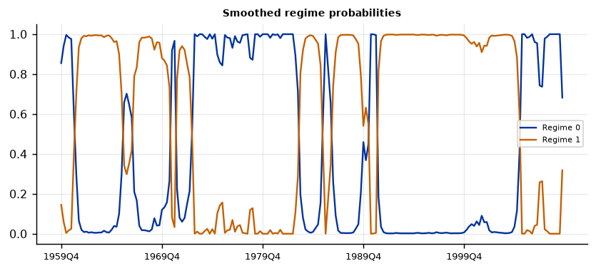
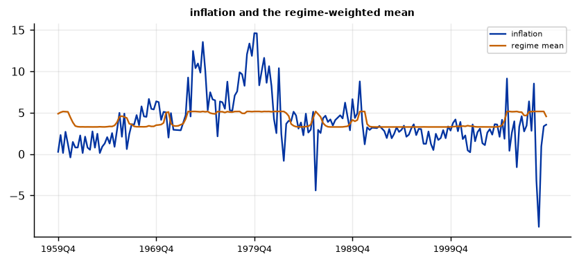
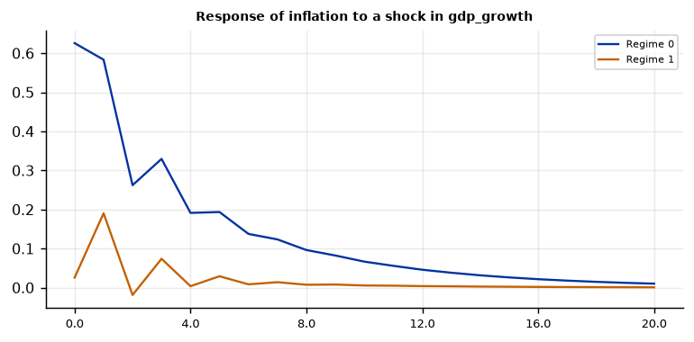
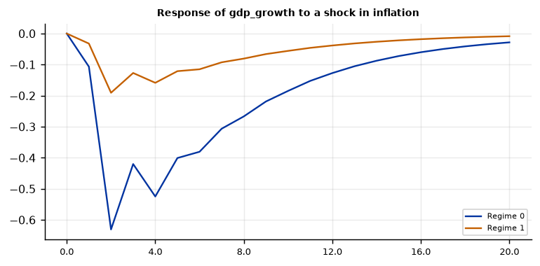

Run this model on your own data in Open Econometric Systems →
Step 1The question and the model
Do GDP growth and inflation behave differently in calm and turbulent regimes, and do shocks have different effects? A Markov-switching VAR (Krolzig 1997) lets the parameters of a VAR depend on an unobserved state \(s_t\) that follows a Markov chain:
You choose what switches. MSI: only the intercepts. MSIH: intercepts and covariance matrix; the autoregressive coefficients are common to all regimes. MSIAH: everything switches. The more switches, the more parameters and the more regimes can be fitted to outliers. The model is estimated by maximum likelihood with the EM algorithm (the Hamilton filter and the Kim smoother) from several starting values; standard errors come from the numerical Hessian.
Three checks before you trust a Markov-switching VAR
- Are the variables stationary? Regimes should describe shifts in means and volatility of stationary variables.
- How many regimes, and what switches? A model that switches too much can create a regime out of a few outliers. Compare the information criteria and look at the size of every regime (Step 7).
- Is it better than a linear VAR? The usual \(\chi^2\) test is not valid; use the information criteria and the Davies bound.
How to write it: the model
We estimate a Markov-switching VAR (Krolzig 1997) with two lags in GDP growth and inflation. The regime, which is unobserved, follows a first-order Markov chain with two states. The intercepts and the covariance matrix of the innovations are regime-specific (MSIH); the autoregressive coefficients are common to both regimes. We estimate the model by maximum likelihood with the EM algorithm from several starting values, using the Hamilton filter and the Kim smoother for the regime probabilities, and take standard errors from the numerical Hessian. We choose the number of regimes with AIC and BIC and compare with a linear VAR using the likelihood-ratio statistic and its Davies bound (Davies 1987), because the standard asymptotic distribution does not hold when the transition probabilities are unidentified under the null.
Step 2Load the data and test for unit roots
import numpy as np
import pandas as pd
import oes_engine as oes # pip install -e open-econometric-systems/oes-engine
data = open("us_macro.csv").read()
df = pd.read_csv("us_macro.csv")
print(df[["gdp_growth", "inflation"]].describe().round(2).loc[["count", "mean", "std", "min", "max"]])
spec = dict(vars=["gdp_growth", "inflation"], time="date", lags=2, regimes=2, switching="MSIH", horizon=20)
r = oes.run("msvar", data, spec)
oes.show(r, "Unit-root") gdp_growth inflation
count 202.00 202.00
mean 3.10 3.98
std 3.52 3.25
min -8.28 -8.79
max 15.43 14.62
Unit-root tests
ADF level, constant: p ADF level, trend: p ADF first difference: p KPSS level: p Conclusion
Variable
gdp_growth 0.000 0.0000 0.0 0.1000 I(0)
inflation 0.025 0.0709 0.0 0.0772 I(0)
Note: ADF H0: unit root; KPSS H0: stationary (p-values are truncated at 0.01 and 0.10). For a Minnesota-type prior use a prior mean of 1 on the own first lag for I(1) variables in levels (random walk) and 0 for stationary variables. A VAR in levels with a random-walk prior remains valid when the variables are I(1) or cointegrated (Sims, Stock and Watson 1990).How to read it
GDP growth rejects a unit root at any usual level; inflation rejects it at 5% with a constant (p = 0.025), is borderline with a trend (p = 0.07), and the KPSS test does not reject stationarity at 5% (p = 0.077). Both are treated as stationary, so the VAR can be estimated in levels of these growth rates.
Step 3How many regimes? Better than a linear VAR?
oes.show(r, "Number of regimes")
oes.show(r, "Model comparison")Number of regimes: information criteria
Log-likelihood AIC BIC HQIC
Regimes
1 -968.789 1963.578 2006.456 1980.930
2 -910.825 1861.651 1927.617 1888.346
3 -897.809 1853.618 1949.269 1892.326
Note: Regimes = 1 is the linear VAR. A standard LR test is not valid under the null of no switching; compare the criteria.
Model comparison
Value
Statistic
Log-likelihood (Markov switching) -910.825
Log-likelihood (linear VAR) -968.789
LR statistic 115.927
Davies upper-bound p-value (approx.) 0.000
AIC (MS) 1861.651
AIC (linear) 1963.578
BIC (MS) 1927.617
BIC (linear) 2006.456
Note: Under the null of no switching the transition probabilities are unidentified, so the chi-square p-value is only a rough guide; prefer the information criteria.How to read it
The two-regime model fits much better than a linear VAR: the log-likelihood is \(-910.8\) against \(-968.8\) (LR statistic 115.9, Davies p < 0.001), and AIC (1861.7 against 1963.6) and BIC (1927.6 against 2006.5) both prefer two regimes. Two against three regimes: AIC prefers three (1853.6), BIC prefers two (1927.6 against 1949.3). We use two, because the BIC prefers it and the third regime is hard to interpret (Step 8).
Step 4Estimate
oes.show(r, "Regime-dependent intercepts")
oes.show(r, "Implied regime means")
oes.show(r, "Transition")
oes.show(r, "Regimes")
oes.show(r, "Autoregressive")
oes.show(r, "Residual covariance, regime 0")
oes.show(r, "Residual covariance, regime 1")
oes.show(r, "Regime classification")Regime-dependent intercepts
Estimate Std. err. z p-value
Parameter
gdp_growth, regime 0 2.2145 0.7856 2.8190 0.0048
gdp_growth, regime 1 3.0152 0.4706 6.4072 0.0000
inflation, regime 0 1.2251 0.5620 2.1799 0.0293
inflation, regime 1 0.7281 0.3007 2.4216 0.0155
Note: Standard errors from the numerical Hessian of the log-likelihood at the EM estimates.
Implied regime means (steady state within each regime)
Regime 0 Regime 1
Variable
gdp_growth 1.9365 3.8236
inflation 5.1582 3.2760
Transition probabilities (row: from, column: to)
Regime 0 Regime 1
From
Regime 0 0.9040 (0.0439) 0.0960 (0.0439)
Regime 1 0.0623 (0.0292) 0.9377 (0.0292)
Note: Standard errors in parentheses (delta method).
Regimes
Expected duration Ergodic probability Share of periods (smoothed prob. > 0.5)
Regime
Regime 0 10.413 0.3935 0.395
Regime 1 16.052 0.6065 0.605
Autoregressive coefficients (common to all regimes)
eq. gdp_growth eq. inflation
Regressor
L1.gdp_growth 0.2048 (0.0673) 0.0817 (0.0389)
L1.inflation -0.0310 (0.1064) 0.3825 (0.0748)
L2.gdp_growth 0.1749 (0.0682) -0.0625 (0.0387)
L2.inflation -0.1654 (0.1036) 0.3728 (0.0716)
Note: Standard errors in parentheses.
Residual covariance, regime 0
gdp_growth inflation
gdp_growth 17.7205 2.6341
inflation 2.6341 12.1852
Residual covariance, regime 1
gdp_growth inflation
gdp_growth 4.8780 0.0567
inflation 0.0567 1.0781
Regime classification
Value
Measure
Regime classification measure, RCM (Ang and Bekaert 2002) 19.51
Note: RCM = 0: sharp classification; 100: none. Below about 30 is sharp.How to read it
Regime 0 is the turbulent regime: 39.5% of quarters, 10.4 quarters on average (\(p_{00} = 0.90\), standard error 0.04); implied mean GDP growth 1.9% and inflation 5.2%. Regime 1 is the calm regime: 60.5% of quarters, 16.1 quarters on average (\(p_{11} = 0.94\), standard error 0.03); mean GDP growth 3.8% and inflation 3.3%. The covariance matrices differ most: the standard deviation of the GDP-growth innovation is 4.2 in regime 0 and 2.2 in regime 1, and that of inflation is 3.5 against 1.0. The correlation of the two innovations is 0.18 in regime 0 and about zero in regime 1. All four intercepts are significant. The autoregressive coefficients are common: inflation is persistent (0.38 and 0.37 on its two lags), GDP growth depends on its own lags (0.20 and 0.17) and, weakly, inflation affects growth negatively (\(-0.17\) at lag 2 but not significant). The RCM is 19.5, a fairly sharp classification.
Step 5Regime dates
oes.show(r, "Regime dating")
oes.plot(r, "Smoothed regime probabilities", ncols=1, size=(6.5, 3))
oes.plot(r, "inflation and the regime-weighted mean", ncols=1, size=(6.5, 3))Regime dating (most likely regime, consecutive periods)
From To Periods Average probability
Regime
Regime 0 1959Q4 1961Q1 6 0.895
Regime 1 1961Q2 1965Q4 19 0.950
Regime 0 1966Q1 1966Q4 4 0.647
Regime 1 1967Q1 1970Q3 15 0.911
Regime 0 1970Q4 1971Q1 2 0.943
Regime 1 1971Q2 1972Q3 6 0.865
Regime 0 1972Q4 1983Q2 43 0.957
Regime 1 1983Q3 1985Q3 9 0.939
Regime 0 1985Q4 1986Q3 4 0.768
Regime 1 1986Q4 1990Q2 15 0.870
Regime 0 1990Q3 1991Q1 3 0.998
Regime 1 1991Q2 2005Q2 57 0.975
Regime 0 2005Q3 2009Q3 17 0.942

How to read it
The turbulent regime is dated 1972Q4–1983Q2 (43 quarters, average probability 0.96) and 2005Q3–2009Q3 (17 quarters, 0.94), with short episodes in 1959–61, 1966, 1970–71, 1985–86 and 1990–91. The calm regime covers 1991Q2–2005Q2 (57 quarters) and most of the 1960s. The short episodes of two to six quarters have lower and more variable probabilities (for 1966 the average is 0.65): do not read them as separate events. Present the probability figure with the table.
Step 6Impulse responses by regime
oes.plot(r, "Response of inflation to a shock in gdp_growth", ncols=1, size=(6, 3))
oes.plot(r, "Response of gdp_growth to a shock in inflation", ncols=1, size=(6, 3))

How to read it
The shock is one standard deviation of the regime's Cholesky factor, with GDP growth ordered first (so inflation does not affect GDP growth on impact: this is an assumption, state it). In the MSIH-VAR the autoregressive coefficients are common, so the shape of the responses is the same in both regimes and the difference is the size of the shocks: a one-standard-deviation inflation shock is 3.4 percentage points in the turbulent regime and 1.0 in the calm one. A GDP-growth shock raises inflation by 0.63 on impact and 0.58 a quarter later in regime 0, against 0.03 and 0.19 in regime 1. An inflation shock lowers GDP growth by 0.52 after four quarters in regime 0 and by 0.16 in regime 1. If you want to claim that the propagation of shocks differs between regimes, you need the MSIAH model (Step 8). These responses have no confidence bands; do not claim significance for the differences.
Step 7Diagnostics
oes.show(r, "Residual diagnostics")Residual diagnostics (observed minus regime-weighted fit)
Statistic p-value Detail
Test
Portmanteau (Hosking), 12 lags 68.8202 0.0260 df = 48; H0: no residual autocorrelation (approximate after estimating lags)
Ljung-Box, gdp_growth 9.6657 0.6453 H0: no autocorrelation
Jarque-Bera, gdp_growth 44.5542 0.0000 H0: normal residuals
ARCH LM, gdp_growth 5.8986 0.2068 H0: no conditional heteroskedasticity
Ljung-Box, inflation 23.6173 0.0229 H0: no autocorrelation
Jarque-Bera, inflation 195.0853 0.0000 H0: normal residuals
ARCH LM, inflation 34.0124 0.0000 H0: no conditional heteroskedasticityHow to read it
Residuals are acceptable for GDP growth (Ljung-Box p = 0.65, ARCH p = 0.21) and not for inflation: autocorrelation (p = 0.02) and ARCH (p < 0.001). Both reject normality (p < 0.001), which reflects outliers. The multivariate portmanteau test rejects at 5% (p = 0.026). The standard errors are therefore approximate. Residual ARCH in inflation suggests that two variance regimes do not capture all the volatility change; the SV-VAR in the Bayesian section handles this.
Step 8Robustness: what switches, lags, regimes and starting values
def run_variant(**kw):
res = oes.run("msvar", data, dict(spec, **kw))
s = {x["label"]: x["value"] for x in res["summary"]}
ic = oes.frame(next(t for t in res["tables"] if t["title"].startswith("Number of regimes")))
k = int(s["Regimes"])
reg = oes.frame(next(t for t in res["tables"] if t["title"] == "Regimes"))
return [s["Log-likelihood"], ic.loc[k, "BIC"], " / ".join(f"{v:.0%}" for v in reg["Share of periods (smoothed prob. > 0.5)"]),
" / ".join(f"{v:.1f}" for v in reg["Expected duration"])]
variants = {"baseline (MSIH, 2 lags)": {}, "MSI: intercepts only": dict(switching="MSI"), "MSIAH: all switch": dict(switching="MSIAH"),
"1 lag": dict(lags=1), "3 lags": dict(lags=3), "4 lags": dict(lags=4), "3 regimes": dict(regimes=3), "20 starting values": dict(starts=20)}
tab = {k: run_variant(**v) for k, v in variants.items()}
print(pd.DataFrame(tab, index=["log-lik", "BIC", "share of periods", "duration (quarters)"]).T)log-lik BIC share of periods duration (quarters) baseline (MSIH, 2 lags) -910.825 1927.617 40% / 60% 10.4 / 16.1 MSI: intercepts only -945.627 1981.326 6% / 94% 1.4 / 21.0 MSIAH: all switch -907.407 1963.167 39% / 61% 13.6 / 21.2 1 lag -937.439 1959.73 38% / 62% 9.9 / 16.1 3 lags -892.942 1912.923 36% / 64% 6.1 / 9.9 4 lags -884.359 1916.789 42% / 58% 7.6 / 10.7 3 regimes -897.809 1949.269 27% / 28% / 44% 7.1 / 51.8 / 12.5 20 starting values -910.825 1927.617 40% / 60% 10.4 / 16.1
How to read it
What switches. With intercepts only (MSI), the second regime is a 1.4-quarter episode holding 6% of the periods: a collapse onto outliers, and the BIC is 1981.3. Letting all coefficients switch (MSIAH) raises the log-likelihood by only 3.4 and the BIC to 1963.2, against 1927.6 for MSIH, so there is no evidence that the dynamics switch. Lags. BIC is lowest with three lags (1912.9; four lags 1916.8, two lags 1927.6, one lag 1959.7; the sample shrinks by one quarter per extra lag, so these are close but not exact comparisons). With three lags the classification agrees with the baseline in 91% of the quarters, but the regimes no longer differ in the level of inflation (implied means 4.12 and 4.08), only in growth (1.9% and 3.8%) and volatility: the label "high-inflation regime" depends on the lag order, so describe the regimes by volatility and growth unless the result holds across lags. Regimes. Three regimes hold 27%, 28% and 44% of the periods, with expected durations of 7.1, 51.8 and 12.5 quarters. Starting values. Twenty starting values give exactly the same log-likelihood as the default, so the solution is not a local maximum.
Step 9Write the results
How to write it: results
We estimate a Markov-switching VAR (Krolzig 1997) with two regimes and two lags in quarterly GDP growth and inflation, 1959Q4–2009Q3, with regime-specific intercepts and covariance matrices (MSIH). It fits much better than a linear VAR (BIC 1927.6 against 2006.5; likelihood-ratio statistic 115.9, Davies p < 0.001). The turbulent regime holds 39.5% of the quarters, lasts 10.4 quarters on average, and has mean GDP growth of 1.9%, mean inflation of 5.2% and innovation standard deviations of 4.2 and 3.5; the calm regime holds 60.5% of the quarters, lasts 16.1 quarters, and has mean growth of 3.8%, mean inflation of 3.3% and innovation standard deviations of 2.2 and 1.0. The turbulent regime is dated 1972Q4–1983Q2 and 2005Q3–2009Q3. Because the autoregressive coefficients are common, impulse responses have the same shape in both regimes and differ in size, since shocks are about three times larger in the turbulent regime; allowing the coefficients to switch does not improve the BIC (1963.2). The result is robust to the starting values (20 starts give the same maximum). It is not robust to the lag order in one respect: with three lags the regimes no longer differ in mean inflation, only in growth and volatility. A model with intercepts only collapses onto a 1.4-quarter regime. Residuals for inflation show autocorrelation and ARCH, so standard errors are approximate.
| Report | What | Where |
|---|---|---|
| Model | Variables, lags, what switches, number of regimes, estimation and starting values | Step 1 |
| Data | Unit-root tests | Step 2 |
| Regimes | AIC, BIC for one to three regimes; comparison with the linear VAR | Step 3 |
| Estimates | Regime intercepts and means, covariances, transition probabilities, durations | Step 4 |
| Dates | Regime dates, probabilities, figures | Step 5 |
| Responses | Regime-specific impulse responses (Cholesky ordering stated) | Step 6 |
| Diagnostics | Residual tests | Step 7 |
| Robustness | What switches, lags, regimes, starting values, regime sizes | Step 8 |
References. Krolzig (1997), Markov-Switching Vector Autoregressions, Springer; Hamilton (1989), Econometrica; Kim (1994), Journal of Econometrics; Sims and Zha (2006), American Economic Review; Davies (1987), Biometrika; Ang and Bekaert (2002), Review of Financial Studies.